Fluid Line/Hose: Service and Repair
Oil cooler pipeTo remove
1. Place covers over the wings to keep the paintwork clean and protect it from damage.
2. Remove the battery cover.
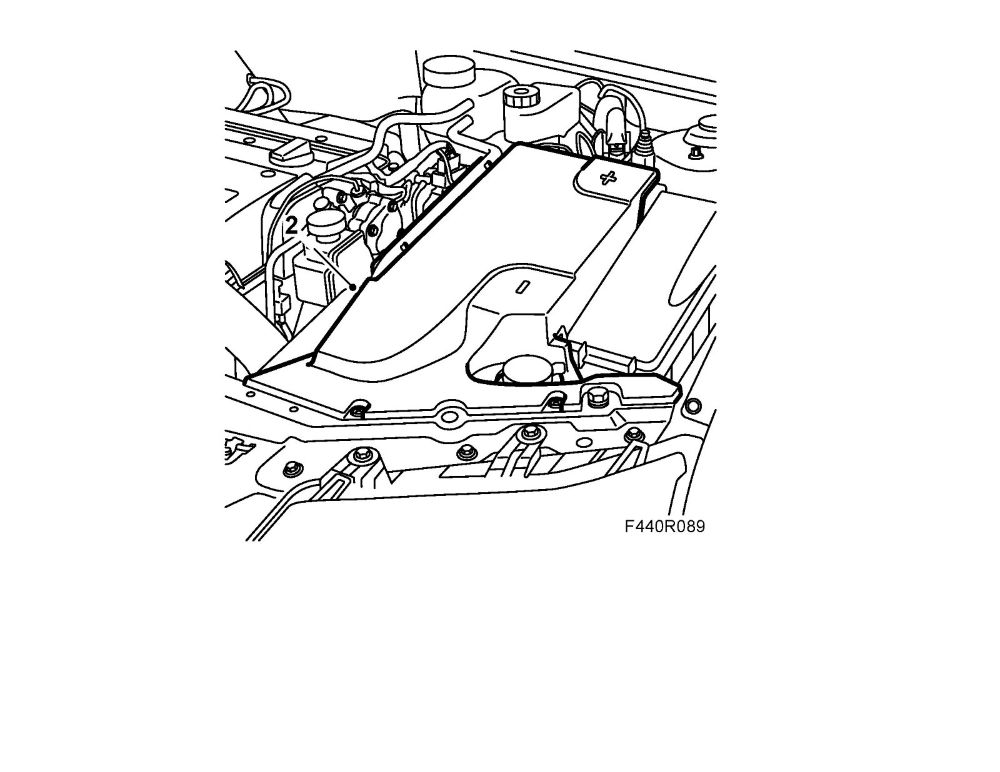
3. Remove the battery, coolant pipe, main fuse box and bonnet switch.
Warning
The oil can be very hot if the car was recently driven. Risk of burn injuries.
4. Unplug the control module connector. Unplug the connectors under the control module. Remove the battery tray.
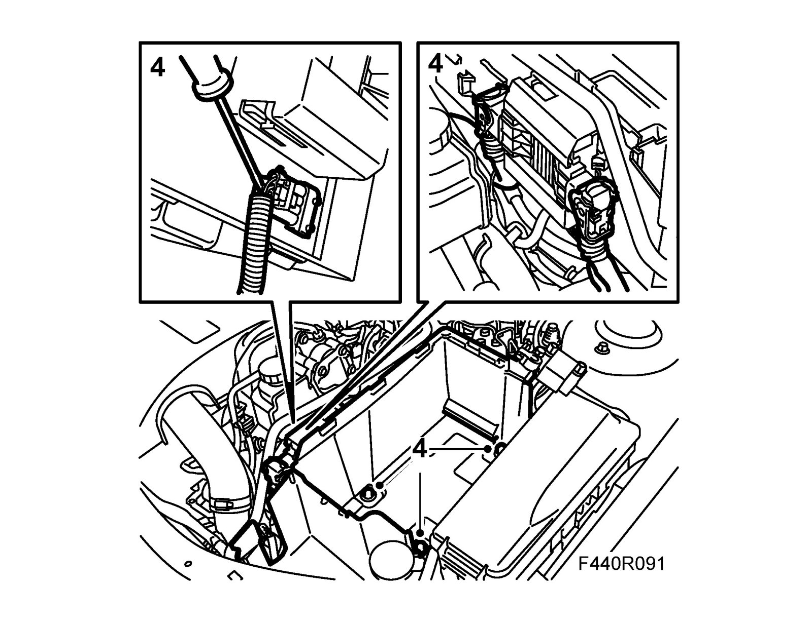
5. Remove the dust protector from the upper pipe, turn 87 92 806 Oil pipe quick-release coupling removal tool slightly and detach the upper connection. Undo the pipe from the clip at the same time. Have a rag ready to catch any oil spill.
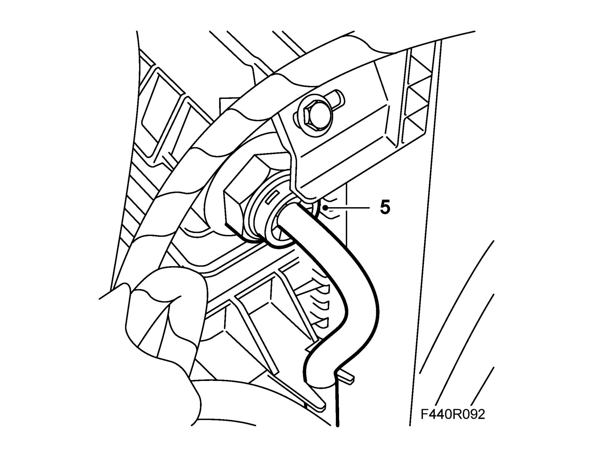
6. Raise the car and place a receptacle underneath. CV: Remove Chassis reinforcement, front subframe, CV
7. Drain the fluid from the transmission.
8. Remove the spoiler shield.
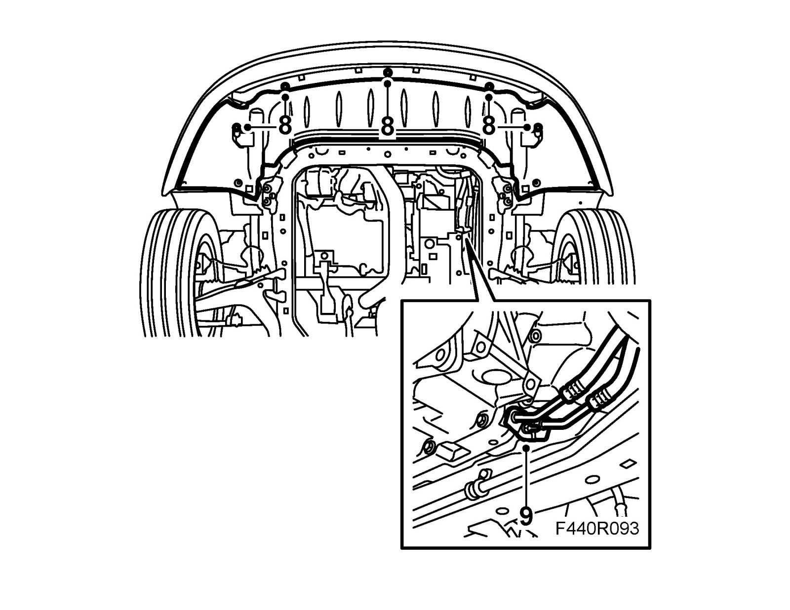
9. Remove the oil pipe from the transmission.
10. Undo the turbo hose from the turbo pipe and move it aside.
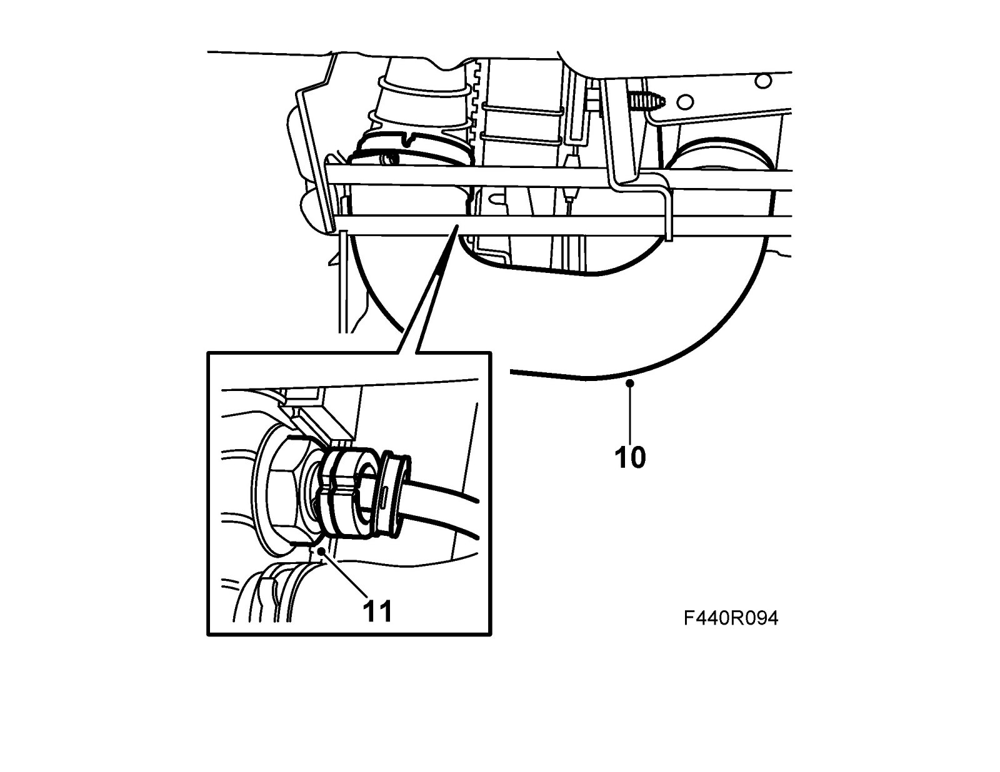
11. Remove the dust protection and the pipe from the oil cooler. Use 87 92 806 Oil pipe quick-release coupling removal tool as above.
Fitting
1. Change the pipe seals in the transmission. Use 83 90 270 Sliding hammer, 87 92 319 Adapter 3/8" - M10 and 87 92 756 Oil pipe puller.
Important
Ensure that the surfaces in the gearbox gasket opening are not damaged.
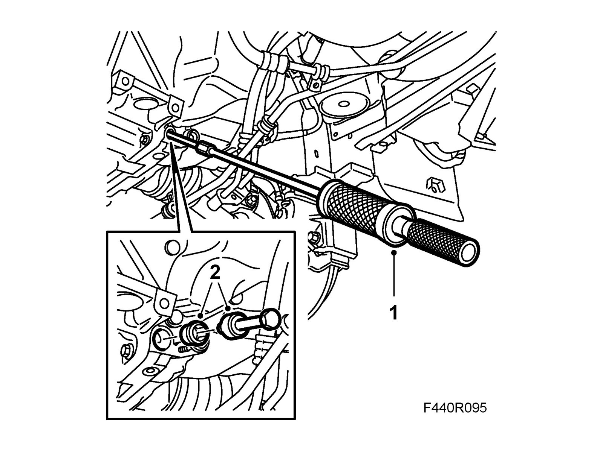
2. Fit new seals lubricated with Vaseline using 87 92 814 Oil pipe seal fitting tool. The pipes will penetrate the seals when fitting.
3. Apply Vaseline, non-acidic to the end pieces of the cooling pipes and put the pipe into position.
4. Fit the lower pipe to the cooler. Press until the pipe snaps into position. Press on the dust protector.
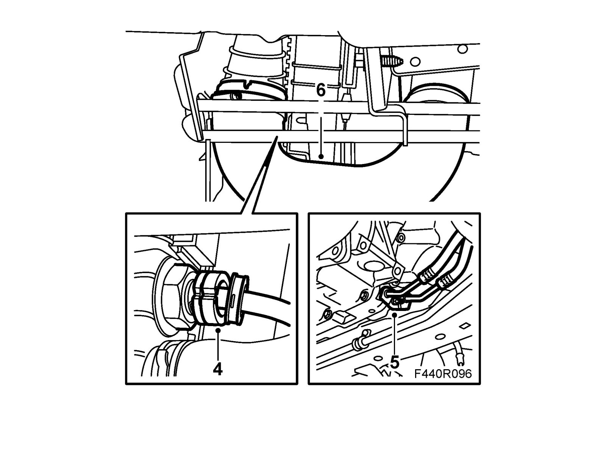
5. Fit the coolant pipe to the transmission. The pipe will penetrate the seals. The hoses must be above the power steering pipe.
Tightening torque 6 Nm (4 lbf ft)
6. Fit the turbo hose.
7. Fit the spoiler shield. CV: Fit Chassis reinforcement, front subframe, CV
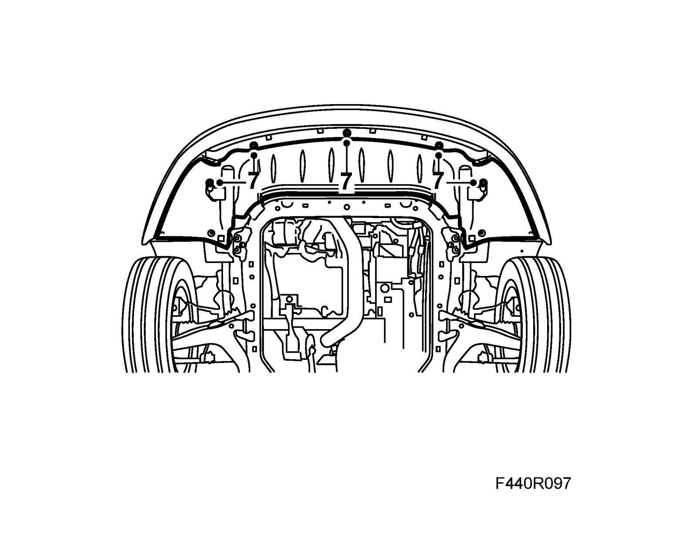
8. Lower the car and fit the upper hose to the holder and the oil cooler. Press until the pipe snaps into position. Press on the dust protector.
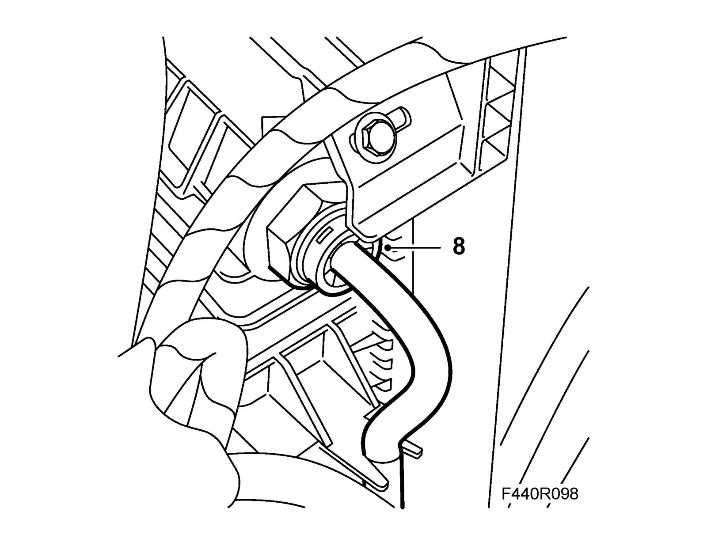
9. Plug in the connectors under the control module. Plug in the control module connector and fit the bonnet switch and battery tray.
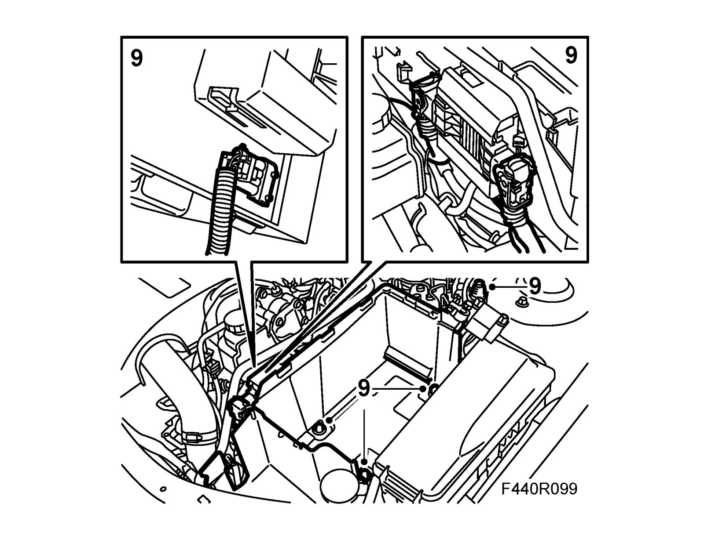
10. Fit the cooling pipe, main fuse box and battery. Connect the battery cables.
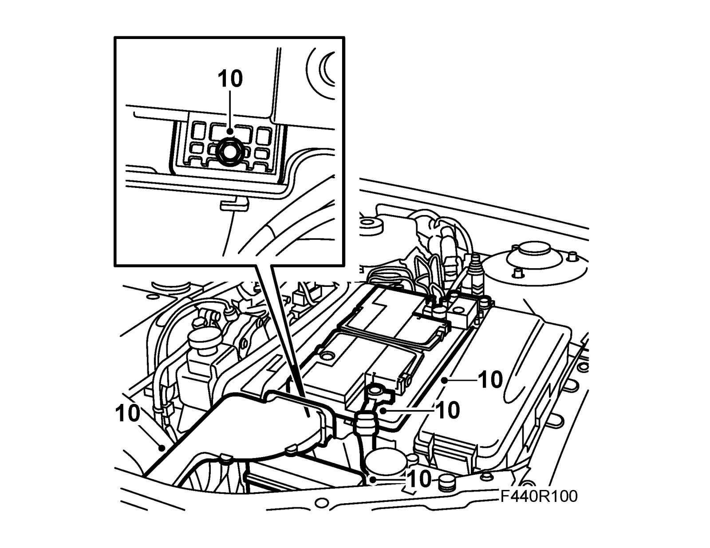
11. Fit the battery cover.
12. Fill with 3 liters of fluid in the transmission. Check the fluid level, see Checking the transmission fluid level. Checking the Transmission Fluid Level
13. Remove the wing covers.
14. Carry out Measures after disconnecting the battery.